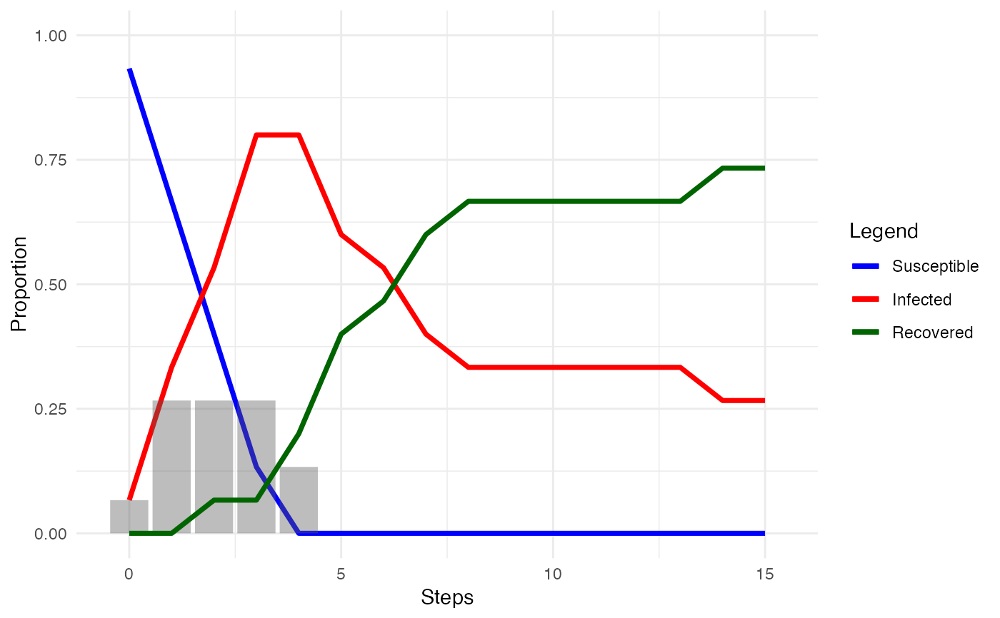

These functions allow measurement of various features of a diffusion process:
network_transmissibility() measures the average transmissibility observed
in a diffusion simulation, or the number of new infections over
the number of susceptible nodes.
network_infection_length() measures the average number of time steps
nodes remain infected once they become infected.
network_reproduction() measures the observed reproductive number
in a diffusion simulation as the network's transmissibility over
the network's average infection length.
network_immunity() measures the proportion of nodes that would need
to be protected through vaccination, isolation, or recovery for herd immunity to be reached.
network_hazard() measures the hazard rate or instantaneous probability that
nodes will adopt/become infected at that time
network_transmissibility(diff_model)
network_infection_length(diff_model)
network_reproduction(diff_model)
network_immunity(diff_model)
network_hazard(diff_model){netdiffuseR}
A valid network diffusion model,
as created by as_diffusion() or play_diffusion().
network_transmissibility() measures how many directly susceptible nodes
each infected node will infect in each time period, on average.
That is:
$$T = \frac{1}{n}\sum_{j=1}^n \frac{i_{j}}{s_{j}}$$
where \(i\) is the number of new infections in each time period, \(j \in n\),
and \(s\) is the number of nodes that could have been infected in that time period
(note that \(s \neq S\), or
the number of nodes that are susceptible in the population).
\(T\) can be interpreted as the proportion of susceptible nodes that are
infected at each time period.
network_infection_length() measures the average number of time steps that
nodes in a network remain infected.
Note that in a diffusion model without recovery, average infection length
will be infinite.
This will also be the case where there is right censoring.
The longer nodes remain infected, the longer they can infect others.
network_reproduction() measures a given diffusion's reproductive number.
Here it is calculated as:
$$R = \min\left(\frac{T}{1/IL}, \bar{k}\right)$$
where \(T\) is the observed transmissibility in a diffusion
and \(IL\) is the observed infection length in a diffusion.
Since \(IL\) can be infinite where there is no recovery
or there is right censoring,
and since network structure places an upper limit on how many
nodes each node may further infect (their degree),
this function returns the minimum of \(R_0\)
and the network's average degree.
Interpretation of the reproduction number is oriented around R = 1. Where \(R > 1\), the 'disease' will 'infect' more and more nodes in the network. Where \(R < 1\), the 'disease' will not sustain itself and eventually die out. Where \(R = 1\), the 'disease' will continue as endemic, if conditions allow.
network_immunity() estimates the proportion of a network
that need to be protected from infection for herd immunity
to be achieved.
This is known as the Herd Immunity Threshold or HIT:
$$1 - \frac{1}{R}$$
where \(R\) is the reproduction number from network_reproduction().
The HIT indicates the threshold at which
the reduction of susceptible members of the network means
that infections will no longer keep increasing.
Note that there may still be more infections after this threshold has been reached,
but there should be fewer and fewer.
These excess infections are called the overshoot.
This function does not take into account the structure
of the network, instead using the average degree.
Interpretation is quite straightforward. A HIT or immunity score of 0.75 would mean that 75% of the nodes in the network would need to be vaccinated or otherwise protected to achieve herd immunity. To identify how many nodes this would be, multiply this proportion with the number of nodes in the network.
The hazard rate is the instantaneous probability of adoption/infection at each time point (Allison 1984). In survival analysis, hazard rate is formally defined as:
$$% \lambda(t)=\lim_{h\to +0}\frac{F(t+h)-F(t)}{h}\frac{1}{1-F(t)} % $$
By approximating \(h=1\), we can rewrite the equation as
$$% \lambda(t)=\frac{F(t+1)-F(t)}{1-F(t)} % $$
If we estimate \(F(t)\), the probability of not having adopted the innovation in time \(t\), from the proportion of adopters in that time, such that \(F(t) \sim q_t/n\), we now have (ultimately for \(t>1\)):
$$% \lambda(t)=\frac{q_{t+1}/n-q_t/n}{1-q_t/n} = \frac{q_{t+1} - q_t}{n - q_t} = \frac{q_t - q_{t-1}}{n - q_{t-1}} % $$
where \(q_i\) is the number of adopters in time \(t\), and \(n\) is the number of vertices in the graph.
The shape of the hazard rate indicates the pattern of new adopters over time. Rapid diffusion with convex cumulative adoption curves will have hazard functions that peak early and decay over time. Slow concave cumulative adoption curves will have hazard functions that are low early and rise over time. Smooth hazard curves indicate constant adoption whereas those that oscillate indicate variability in adoption behavior over time.
Kermack, W. and McKendrick, A., 1927. "A contribution to the mathematical theory of epidemics". Proc. R. Soc. London A 115: 700-721.
Allison, P. 1984. Event history analysis regression for longitudinal event data. London: Sage Publications.
Wooldridge, J. M. 2010. Econometric Analysis of Cross Section and Panel Data (2nd ed.). Cambridge: MIT Press.
Other measures:
between_centrality,
close_centrality,
closure,
cohesion(),
degree_centrality,
eigenv_centrality,
features,
heterogeneity,
hierarchy,
holes,
node_diffusion
Other diffusion:
node_diffusion,
play
smeg <- manynet::generate_smallworld(15, 0.025)
smeg_diff <- play_diffusion(smeg, recovery = 0.2)
plot(smeg_diff)

# To calculate the average transmissibility for a given diffusion model
network_transmissibility(smeg_diff)
#> [1] NaN
# To calculate the average infection length for a given diffusion model
network_infection_length(smeg_diff)
#> [1] 1
# To calculate the reproduction number for a given diffusion model
network_reproduction(smeg_diff)
#> [1] NaN
# Calculating the proportion required to achieve herd immunity
network_immunity(smeg_diff)
#> [1] NaN
# To find the number of nodes to be vaccinated
ceiling(network_immunity(smeg_diff) * manynet::network_nodes(smeg))
#> [1] NaN
# To calculate the hazard rates at each time point
network_hazard(play_diffusion(smeg, transmissibility = 0.3))
#> [1] NA 0.07142857 0.15384615 0.18181818 0.22222222 0.14285714
#> [7] 0.16666667 0.20000000 0.25000000 0.33333333 0.00000000 0.00000000
#> [13] 0.00000000 0.00000000 1.00000000 NaN